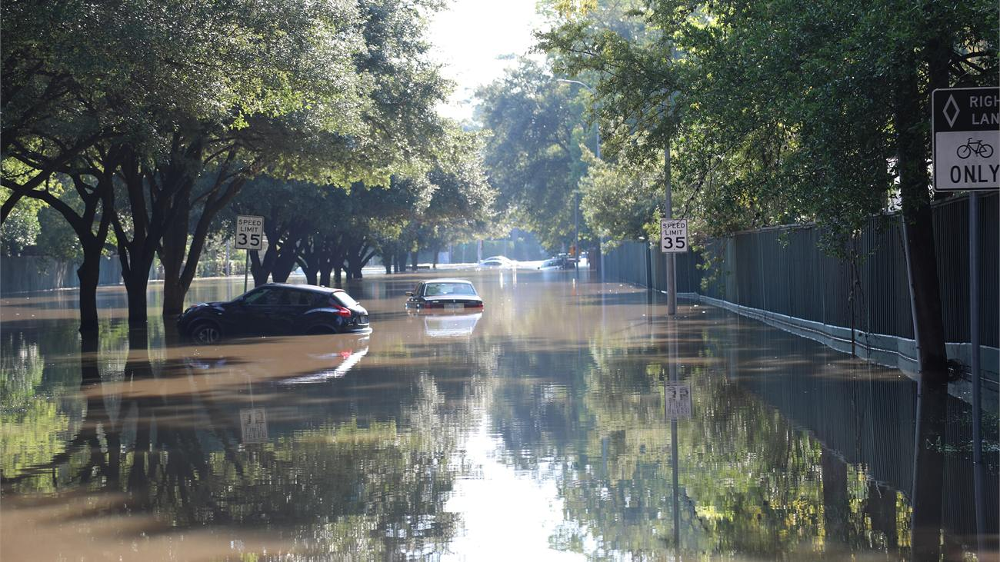
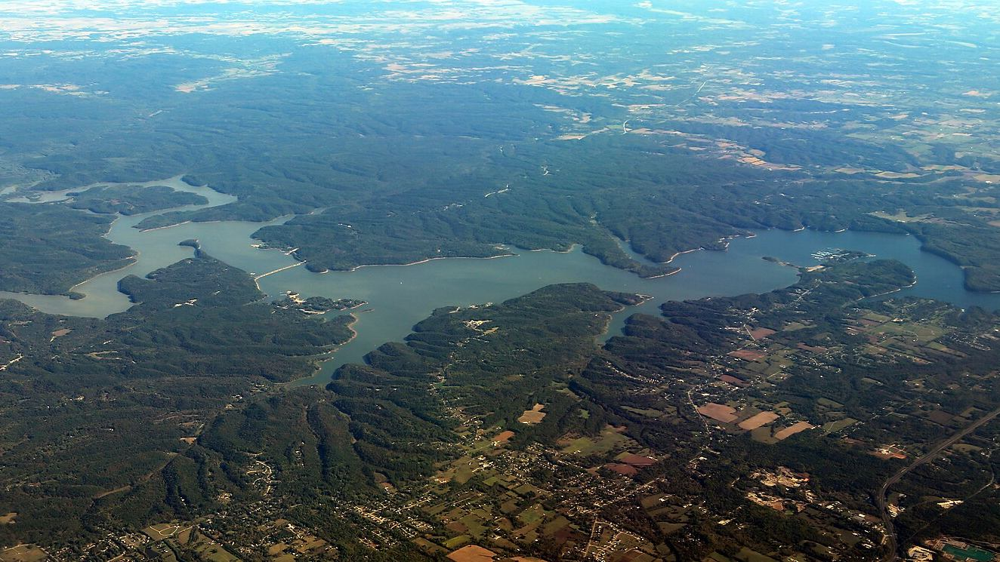
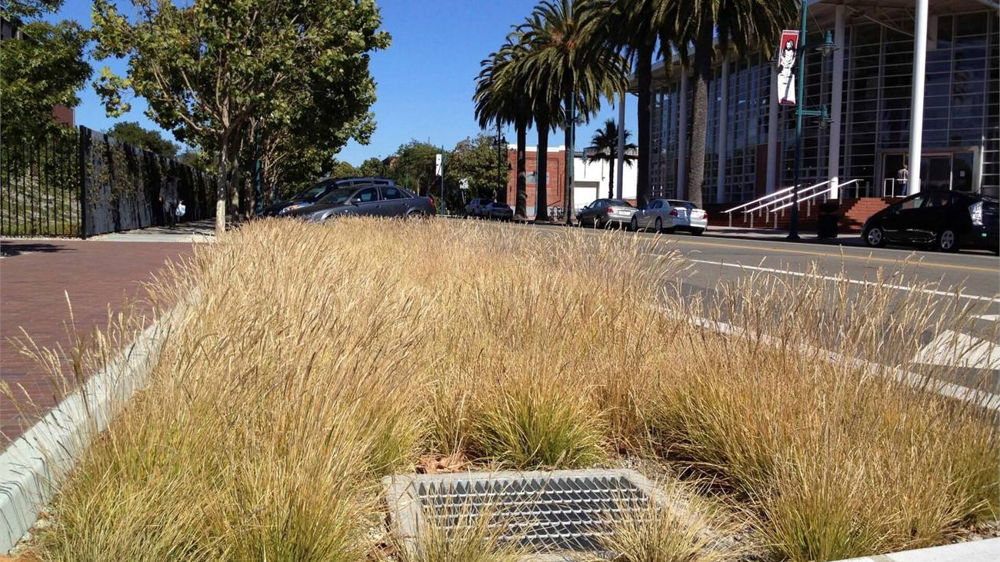

Flood-governance cognitive maps
Explore how different sectors understand the drivers of flood risk and their relationships.
Research
We study how hydrologic processes and infrastructure performance interact with governance, socioeconomic conditions and human behavior to shape risk, vulnerability, equity and long-term resilience across space and time.
Research perspective
Urban water systems are complex socio-environmental systems. We develop mechanism-based models that connect environmental conditions and infrastructure performance to decisions by households, utilities, agencies and organizations. This makes it possible to examine how risk and response evolve across space and over time, and where engineering or policy interventions can change the trajectory.
01
Climate risk assessment & urban flooding
We connect rainfall and flood processes to the infrastructure, exposure and response systems that determine what a storm actually does to a city.
Research combines hydrologic and hydrodynamic modeling with GIS, remote sensing, transportation-network analysis, building-scale exposure, insurance data and community knowledge.

Current & foundational projects
02
Urban water systems & sustainability transitions
We study water utilities as coupled technical, institutional and financial systems rather than as infrastructure alone.
Research examines feedbacks among water demand, conservation, revenue, infrastructure renewal, drought, service reliability, institutions and household affordability.

Research lines
03
Stormwater infrastructure, behavior & governance
Distributed infrastructure is a coupled problem because public outcomes depend on many private decisions and many organizations acting over time.
Research connects household adoption, social influence, parcel feasibility, hydrologic connectivity, maintenance and governance networks to system-scale stormwater performance.

Current & foundational work
Methods
Methods are chosen to match the mechanism and scale of the research question. The lab combines physical process modeling with computational, spatial and social-science methods.
Open science
We share code and de-identified data when consent, licensing and data agreements allow, with enough documentation to make the analytical path inspectable.
Explore how different sectors understand the drivers of flood risk and their relationships.
Public repositories for green infrastructure adoption, exposure analysis and governance networks.
Interview transcripts, identifiable survey responses and restricted administrative data remain protected. Aggregated and de-identified materials are shared when appropriate.
Work with us
The lab is recruiting its first graduate cohort and welcomes collaborations with agencies, utilities, community organizations and researchers.